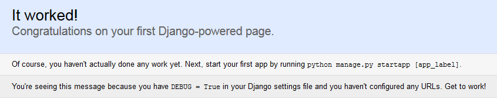
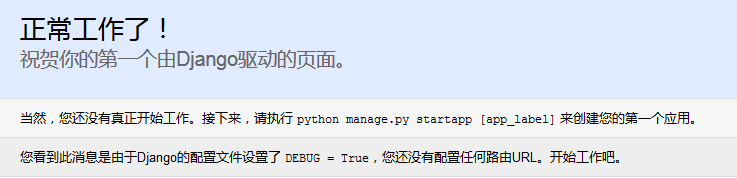

第一个 Django 程序
记住你所有的操作均是在虚拟环境下。
创建一个新项目
$ django-admin startproject mysite
在当前目录下会生成 mysite 目录，目录结构如下：
(env_django)shengan@ubuntu:~$ tree mysite/
mysite/
├── manage.py
└── mysite
├── __init__.py
├── settings.py
├── urls.py
└── wsgi.py
1 directory, 5 files
接下来运行看看：
$ python manage.py runserver 0.0.0.0:8000
效果图如下：（默认为英文，要显示中文可在 settings.py 中进行设置）

中文的效果图如下：

若你使用 django 默认的数据库（sqlite），则在运行之后在当前目录下会生成一个 db.sqlite3 的文件，这是 sqlite 数据库的数据库文件，可不用理会（删除都没有关系）。（目录也是可以修改，需要你去修改 settings.py 文件中数据库相对应的配置）
新建一个 app
$ python manage.py startapp blog
(env_django)shengan@ubuntu:~/mysite$ tree blog/
blog/
├── admin.py ## 与 django 的管理页面有关
├── __init__.py ## 空文件，在 python 程序中很常见，此处仅仅代表同目录下所有 py 文件为一个模块
├── migrations ## 数据库操作记录
│ └── __init__.py
├── models.py ## 模型定义文件
├── tests.py ## 写测试时会用到
└── views.py ## 视图文件
1 directory, 6 files
上述列出的文件中，重要的当属 models.py 和 views.py 文件了，其它的文件现阶段可不必理会。
注册 app
编辑 settings.py 文件，在 INSTALLED_APPS 中添加 blog
# Application definition
INSTALLED_APPS = (
'django.contrib.admin',
'django.contrib.auth',
'django.contrib.contenttypes',
'django.contrib.sessions',
'django.contrib.messages',
'django.contrib.staticfiles',
'blog',
)
url
进入 mysite 目录，打开 urls.py 文件：
shengan@ubuntu:~/mysite/mysite$ vim urls.py
"""mysite URL Configuration
The `urlpatterns` list routes URLs to views. For more information please see:
https://docs.djangoproject.com/en/1.8/topics/http/urls/
Examples:
Function views
1. Add an import: from my_app import views
2. Add a URL to urlpatterns: url(r'^$', views.home, name='home')
Class-based views
1. Add an import: from other_app.views import Home
2. Add a URL to urlpatterns: url(r'^$', Home.as_view(), name='home')
Including another URLconf
1. Add an import: from blog import urls as blog_urls
2. Add a URL to urlpatterns: url(r'^blog/', include(blog_urls))
"""
from django.conf.urls import include, url
from django.contrib import admin
urlpatterns = [
url(r'^admin/', include(admin.site.urls)),
]
在 urlpatterns 中添加：
url(r'^blog/$', 'blog.views.blog_index', name='blog_index'),
view
进入 blog 目录，编辑 views.py 文件：
shengan@ubuntu:~/mysite/blog$ vim views.py
from django.http import HttpResponse
def blog_index(request):
return HttpResponse("Hello, world.")
浏览器访问
直接在浏览器地址栏输入 ip 地址（http://10.0.0.46:8000/blog/，将 10.0.0.46 换成你的 ip，8000 换成你的端口），请求成功后即可看到 Hello, world.
小结
以上很简单也很基础，也没有具体说明为何那般写，但好歹也是一个简单的 django 程序的大部分流程了。后续章节会继续在此基础上进行深入的开发完善，请继续关注。